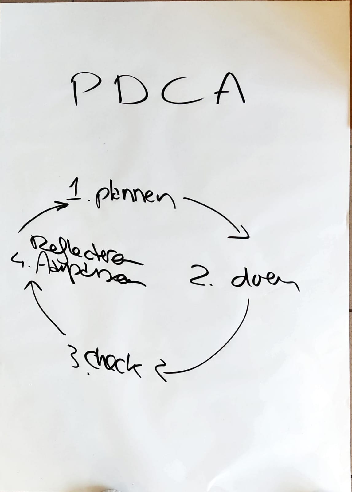

scrum workshop
Aanpak
Onze groepslid Madelief had een workshop geregeld over de Scrum methode. Haar moeder had ons via de website "Wonder" een workshop gegeven waarin ze alles uitlegde over de Scrum methode en ons kleine oefeningen liet doen om de methode te begrijpen.
Het proces
Nadat wij allemaal in de Wonder call zaten kregen we uitleg over wat Scrum precies is, hoe het onze groep kan helpen met de planning en taakverdeling om uiteindelijk een zo goed mogelijk eindproduct neer te zetten en hoe het kan helpen met problemen snel te tackelen. Vervolgens moesten we de Scrum Master bepalen, Madelief nam die rol. Deze persoon zorgt ervoor dat het team optimaal kan presteren. Vervolgens kregen we uitleg over hoe we het beste onze sprints-planning konden inrichten. Je begint natuurlijk met een planning en je eindigt met een groeps review en een reflectie. Je stelt deelproducten op per sprint, waarna een evaluatie volgt en ook feedback wordt gezocht. Dit kan je zien als een soort cycle. Je plant, je maakt, je reviewed en je reflecteert.
We hebben ook uitleg gekregen over het inplannen van welke deelproducten er gemaakt worden per sprint. Hierin werd uitgelegd dat de belangrijkste producten als eerst centraal moeten staat, en de overige producten in de backlog mogen blijven tot er extra tijd is om die af te handelen. Zo hou je je niet te veel bezig met (op het moment) overbodige dingen en kom je niet in tijdnood als het gaat om het belangrijkste product oplevering. Je plant per sprint in welke producten er opgeleverd worden, vervolgens verdeel je de taken die gedaan moeten worden om het product neer te zetten, daarna ga je op zoek naar feedback van je groepsleden zowel als docenten en uiteindelijk evalueer je op het proces. Nog een dagelijks concept wat meegegeven is zijn daily standups. Hiermee stel je vast waar er op de dag aan gewerkt wordt en wat er voorheen al gedaan is, doormiddel van een 5 min gesprekje met je groep. Dit zorgt ervoor dat de communicatie binnen onze groep versterkt. Door deze standups "werd het ijs ook gebroken" met de algemene communicatie binnenin ons groepje en sindsdien is dat alleen maar beter geworden.

Reflectie
Deze workshop heeft echt heel veel gedaan voor ons groepje. We gebruiken nogsteeds dezelfde methode en het helpt ons met het plannen en het nakomen van alle deadlines. Het zorgt zeker voor orde, een sterkere en regelmatigere communicatie en een goede algemene overzicht in ons groepje. We hebben hier zeker veel aan gehad.
© 2022 Yassin Chehlaoui